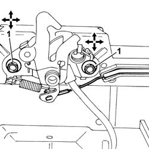
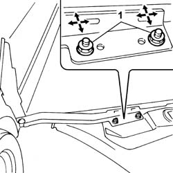

7025A10 BONNET LID - SQUARE
- Path
- Procedures > 70 FITTINGS > 7025 COMPARTMENT LIDS > 7025A LOCATION OF BONNET WIND NOISE > 7025A10 BONNET LID - SQUARE
- Kind
- repair procedure (removal / refitting; the operation number is the code)
- Applies to
- all engines; all production periods
- Interactive page
- https://sloeber94.github.io/elrnDB-fUlss/en/#/179007748
Applies to: all engines; all production periods
- Raise the bonnet lid and support it appropriately.
- Carry out the operations described below to adjust the bonnet lid in a vertical direction.
1. Loosen the bolts fixing the bonnet lock.

Applies to: all engines; all production periods
1. Loosen the bolts fixing the bonnet hinges, bonnet side.

Applies to: all engines; all production periods
- Adjust the position of the bonnet, using the slotted openings in the bolts fixing the bonnet lock and hinges.
- If necessary, adjust the height of the buffers.
- When the adjustment is completed, tighten the bolts fixing the bonnet lock and hinges to torque.
- Carry out the operations described below to adjust the bonnet lid in a lengthwise and transverse direction.
1. Loosen the bolts fixing the bonnet hinges.
Applies to: all engines; all production periods
- Adjust the position of the bonnet, using the slotted openings in the bolts fixing the bonnet lock and hinges, bodyshell side.
- At the end of the operation, tighten the bolts fixing the bonnet hinges, bodyshell side.